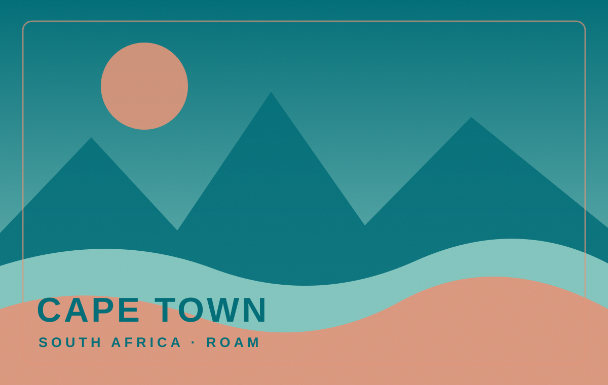

Personal travel, learned by choice
Find your
somewhere.
Skip the filters. Pick the place that pulls you in, and Roam will learn what makes a destination feel right for you.

Taste check
Where would you rather go?
Go with your instinct — there are no wrong answers.
Your first recommendations are ready. Keep choosing to sharpen them, or open My Taste.
Your travel DNA
Your taste,
decoded.
Better together
Find the group’s
happy place.
Combine taste profiles and balance the crowd favorite against the place that leaves nobody behind.
Inside Roam
Small choices.
Useful intelligence.
Roam is a transparent prototype of preference learning. Each destination has a compact visual-semantic embedding across ten travel qualities. When you choose A over B, the model learns which differences best explain that decision.
Under the hood, Roam fits a regularized Bradley–Terry logistic utility model. The next question is selected actively: it favors comparisons that are uncertain, close, visually different, and not overexposed.
Group mode normalizes each person’s utilities so every traveler has equal influence, then averages those scores. It also reports disagreement rather than pretending the recommendation is unanimous.
Responsible use & limitations
This is a discovery aid, not a booking engine. The dataset is small and curated, and destination fit is not the same as affordability, accessibility, safety, visa eligibility, or current local conditions.
A natural next step is OpenAI CLIP, which learns a shared representation for images and text. With a larger licensed photo dataset, Roam could use CLIP to recognize visual similarity and relate destination images to prompts such as “a quiet natural retreat” without manually rating every place. CLIP is deliberately not used here so this prototype remains lightweight, deterministic, explainable, and zero-install. A production version should also add accessible descriptions, practical travel constraints, and broader user research.
AI-use disclosure: Generative AI (OpenAI Codex) assisted with implementation, interface copy, tests, and documentation.